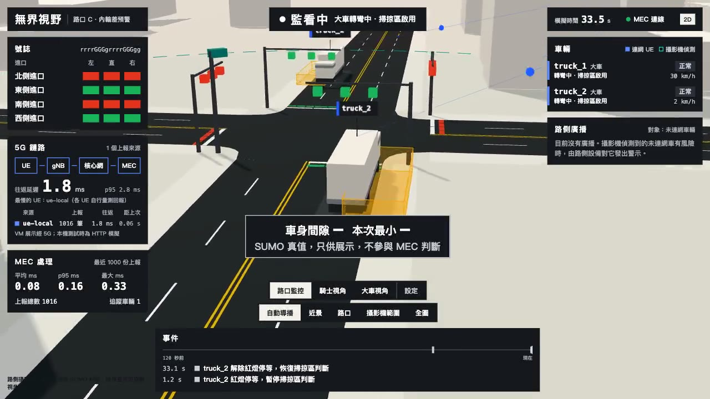

01
讓 AI 看懂畫面與訊號
先用模型把畫面或訊號變成精簡的狀態，再交給 AI 決策，並量測效果。
2019 → 現在
機械群出身。2022 年獲第十八屆技職之光「技職傑出獎 證照達人」（技術型高中組）。
第 8 名
國手培訓 1,872 小時。另有第 52 屆全國技能競賽冷作青年組第 2 名。
國中自學 Python，進大學後正式轉到資訊。做了 AI 代理、語音轉寫與公司內部系統，並參加資訊類競賽。
從做過的專案整理
01
先用模型把畫面或訊號變成精簡的狀態，再交給 AI 決策，並量測效果。
02
先定好怎麼量再下結論，結果不成立也照實記錄。
03
驗光國考錯題本與班表鬧鐘，透過 TestFlight 給其他人使用。
以 Claude Code、Codex 等 AI 代理協作開發：需求、架構與技術選擇、實驗設計與結果判讀由本人與 AI 討論後決定，程式碼主要由 AI 撰寫。
LLM 代理・畫面辨識
讓 AI 在背景代打一款回合制自走棋類遊戲：畫面辨識把截圖轉成精簡 JSON 狀態，語言模型只負責決策。
0.47 秒
全畫面 OCR，原本 18～25 秒
看作法與限制
語音轉寫・模型比較
上課錄音在家用 GPU 主機轉成逐字稿，再對照當週講義整理成上課紀錄。比較過多個轉寫模型後才選定。
39/45
本機模型的關鍵詞命中（雲端對照 44/45）
看作法與限制
兼職・內部系統
把報價、圖說、工務、會計等人工與 Excel 作業做成公司內部網頁系統，部署在公司主機供同事使用。
34 樘
圖說自動化實案試跑，與人工成品相符
看作法與限制
競賽・5G-V2X
2026 行動通訊實務競賽 智慧數位應用組決賽入圍，五人隊，主導開發。

看專案與影片
另有 iOS App：驗光國考錯題本、班表鬧鐘等，看全部 App。